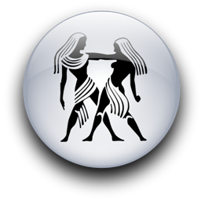
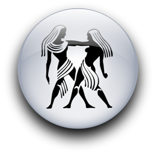

Женщина Близнецы и Мужчина Лев
-

 

Лев может уверять, что у него нет комплекса превосходства и что он не нуждается во всеобщем уважении; но он может одурачить кого угодно, но не женщину, которая его любит и, которая, к тому же Близнецы.
Льву, которому есть где упражняться в тщеславии и демонстрировать свою мудрость, можно позволить себе быть в обществе скромным. Особенно если у него есть жена, точно знающая, когда и что сказать, чтобы ему не нужно было опускаться до вульгарного хвастовства.
Их союз предречен судьбой, и ему нельзя не уступить. И не только в любви или дружбе, но и в деловых и семейных связях. Мужчина-Лев может считать своим долгом учить женщину-Близнецов тому, что он может изменить ее жизнь к лучшему. Уж если он чувствует себя обязанным инструктировать других, то она может ожидать большего, чем обычное количество львиных лекций! Но та же самая память, которая заставляет его постоянно учить ее, приносит и неосознанное чувство благодарности за прошлую помощь, и желание предложить ей свою защиту.
Ей тоже хочется защитить его от обид и всего того, что ранит его самолюбие. Что-то внутри ее восприимчивого сердца говорит ей, что и когда нужно сказать, чтобы проявились его нежность и щедрость. Безусловно, ему это льстит. И то, что им обоим доставляет удовольствие, может стать взаимным восхищением.
В основном они совместимы, но это вовсе не исключает бунта с той или иной стороны. Ее "воздушное" безразличие может распалить гнев Льва, а это пламя разгорается медленно, но унять его бывает очень трудно. Тогда она может использовать ссору, чтобы поупражняться в сарказме, что больно задевает львиное "эго". Если увлечения и интересы вне дома отвлекут ее от ежедневного почитания Льва, как и любой король, лишенный привычного внимания, он может тут же заподозрить измену. Бедная женщина просто не понимает, чем она рискует!
Поскольку Лев более постоянный, и, следовательно, более практичный, чем изменчивый знак Близнецов, раздражать его может многое. Например, то, что она способна забыть про обед из-за новой книги, или занимать телефон, когда ему нужно позвонить, или передумать идти в театр, когда он уже купил билеты, или потерять ключи... Он бы никогда не допустил подобной беззаботности, и это правда. Но он и вправду настоящий мужчина, ведь именно он может отнестись ко всему этому воистину с королевским великодушием!
Хотя женщина-Близнецы восхищается его настойчивостью, цельностью и умом, однажды ей может стать скучно. Например, она способна настаивать на дорогих развлечениях тогда, когда он не в состоянии позволить это, но слишком горд, чтобы в этом признаться.
Он будет рычать, но этим все и окончится, ведь она вовремя вспомнит о спасительной лести и быстро переключится с ветреного, капризного Близнеца на чувствительного, преданного и женственного. А что касается ее интересов, он не станет возражать, если она делает карьеру, занимается балетом, бегает трусцой, коллекционирует мумии или накалывает бабочек - главное, чтобы она ни в чем его не превзошла. Женщина-Близнецы никогда не должна дразнить своего гордого Льва, намекая на то, что настоящие цари природы позволяют своим подругам охотиться в джунглях, пока сами греются на солнышке, ведь ее могут отозвать с охоты домой и навсегда вернуть в прайд, то есть в семью, а какой Близнец способен этим ограничиться? Но они, слава Богу, не в джунглях, и в нем есть истинно королевское благородство.
У нее тоже должна быть настоящая цель в жизни - например, следить, чтобы он был счастлив и доволен. Все-таки женщина, которую любит Король, определенно имеет свои преимущества! Лев щедр и силен, благороден и великодушен, а если еще его "эго" направить в нужном направлении... К тому же он прекрасный любовник, и он не собирается быть сексуальным завоевателем - он любящий моногамный царь.
У женщины-Близнецов легкие прикосновения и "воздушный" подход к сексу, и это способно раздуть пламя его желания, по крайней мере, в начале. Со временем он может почувствовать, что ему чего-то недостает.
Для Льва с его горячим сердцем, секс - синоним нежности и страстности, а в любви Близнецов есть что-то отстраненное. Он может обольстить ее и обладать ею, но ее ум не дает ей покориться ему полностью. Невозможность завоевать ее целиком может заставить его усомниться в собственной мужественности. Тогда она возможно будет жаловаться, что он теряет интерес к любви, хотя правда в том, что ему мешают ее холодная отстраненность и двойственность. Он очень боится не оправдаться, но не хочет этого показать, потому что ничто не ранит Льва больнее, чем даже намек на то, что он может не оказаться совершенным любовником. Она должна помнить, что в любви этот мужчина - идеалист, и должна подыграть ему, использовав все свое меркурианское воображение. Их любви нужны романтика и сентиментальность, например, тихая музыка во время их физической близости. А если иногда он бывает слишком властным или кажется надменным. Близнецам нужно вовремя вспомнить о своих лингвистических способностях и перевести команды Льва на язык страсти и любви.
"Ты слишком много болтаешь. Нельзя ли иногда помолчать?" - Тут все дело в его задетом тщеславии, потому что его подруга-Близнецы с ее быстрым острым умом опять оказалась ярче его.
"Не надо меня кормить. Я пойду и где-нибудь поем" - это значит, что ему не хватает внимания, и его гордость нуждается в утешении.
"Откажись от приглашения в субботу. Скажи им, что мы не можем прийти. Извинись как-нибудь, и давай останемся дома" - а это значит, что он предпочитает побыть со своими Близнецами. И для Льва это означает любовь!